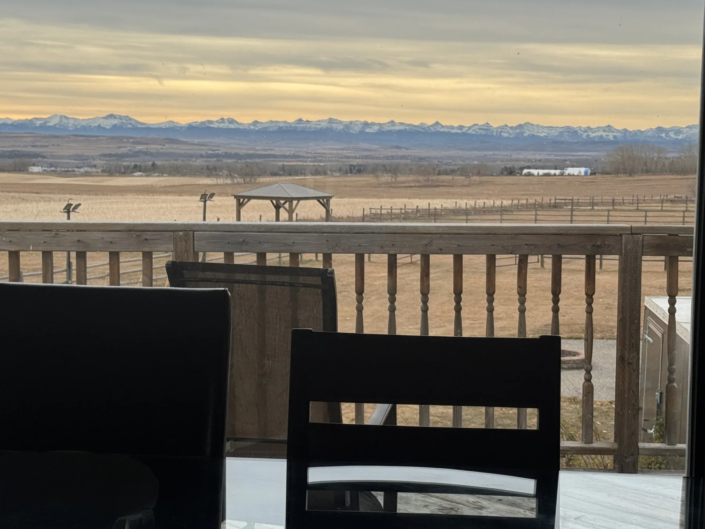
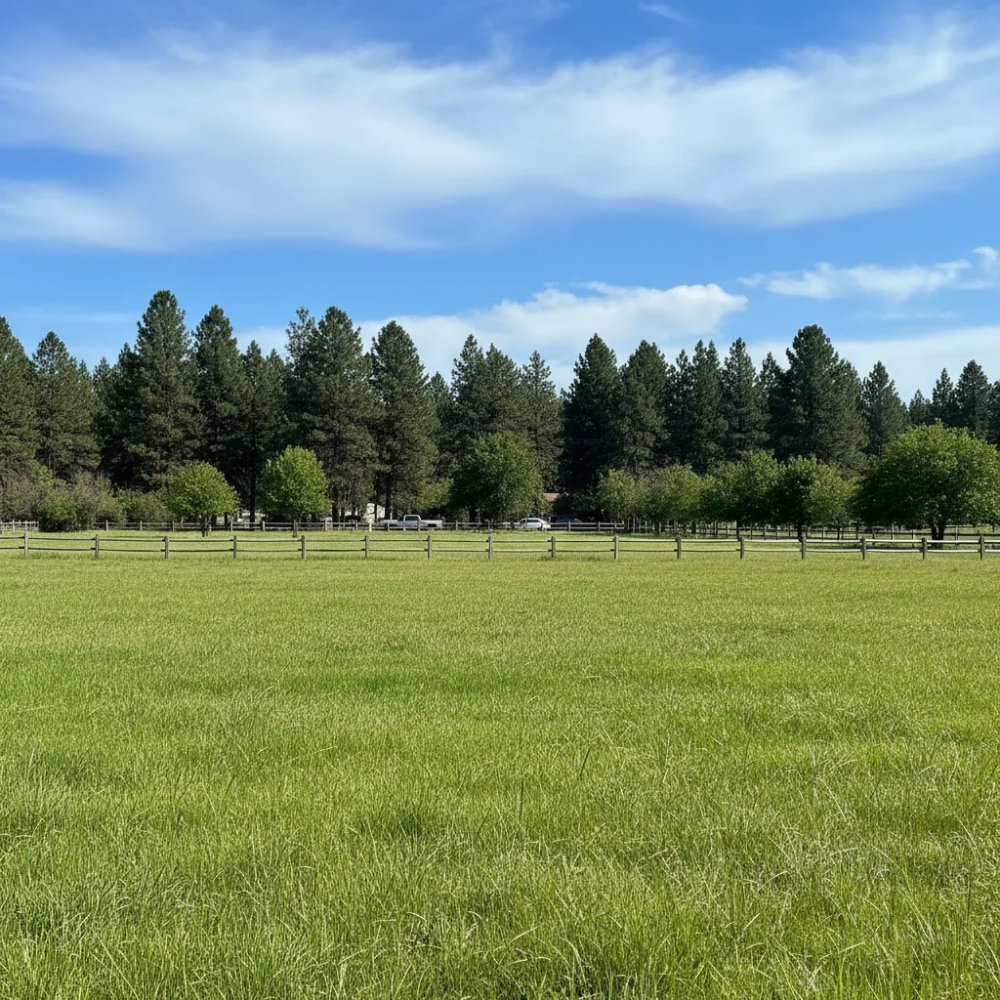
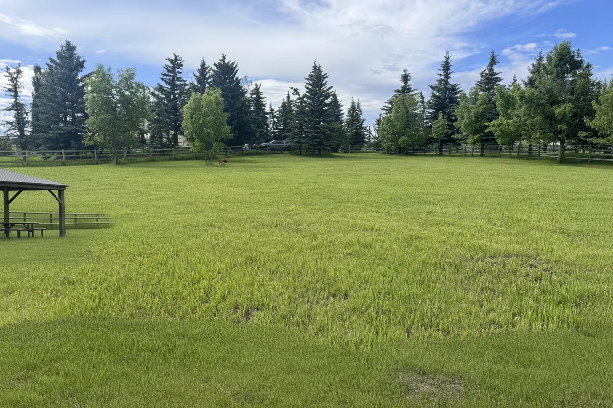
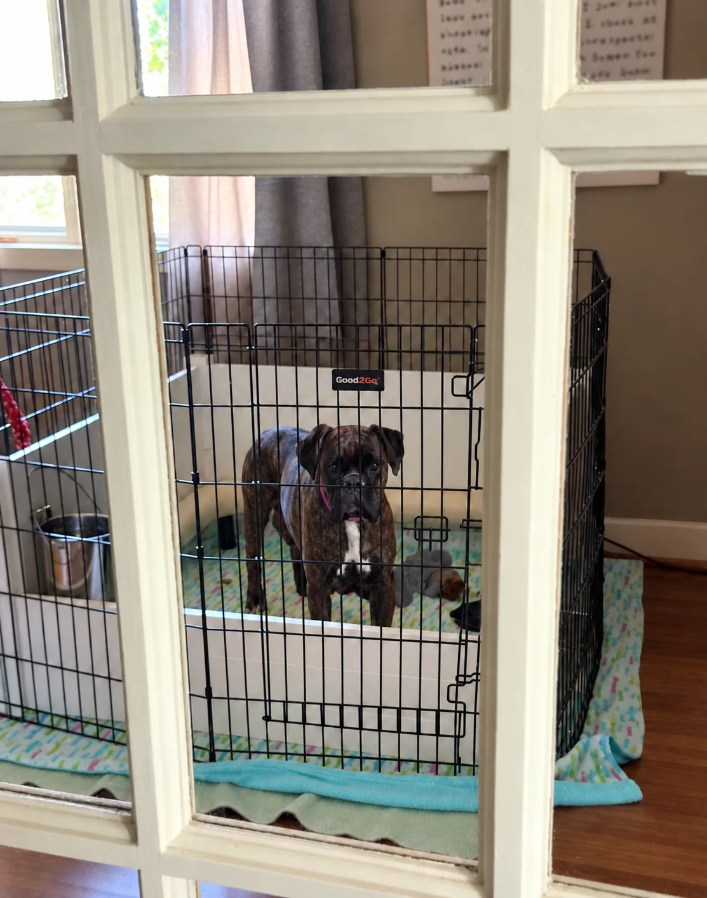
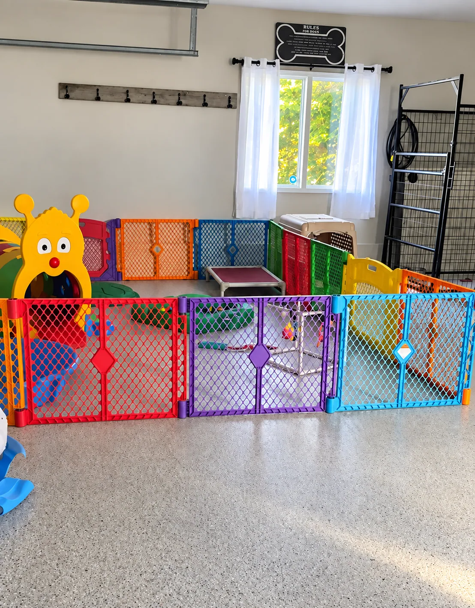
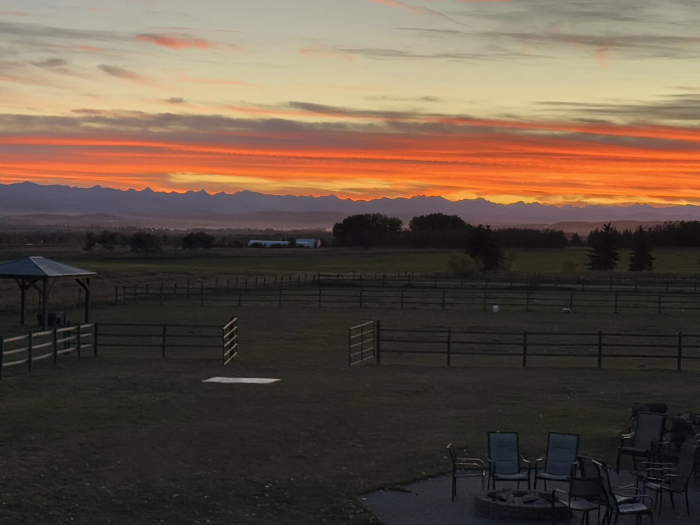
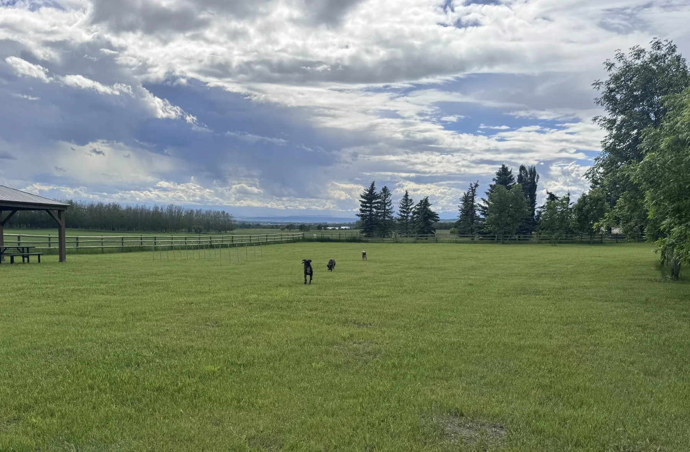
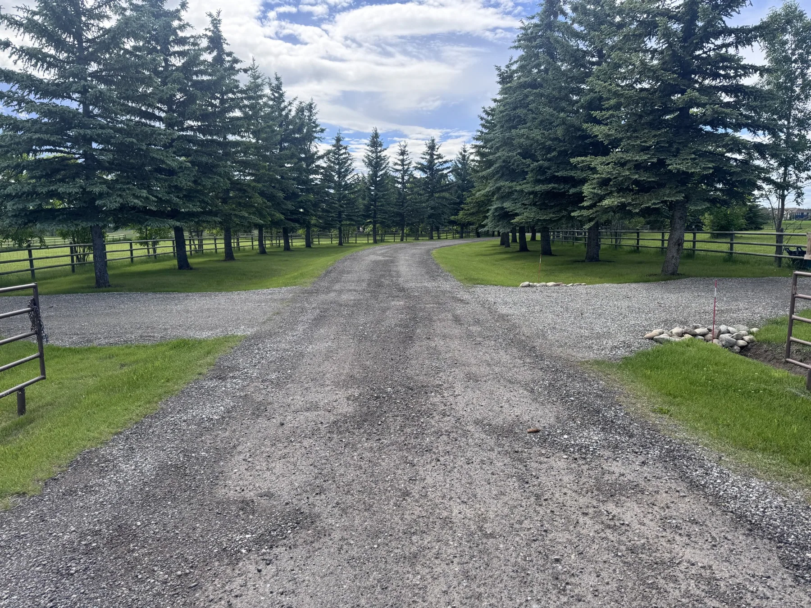
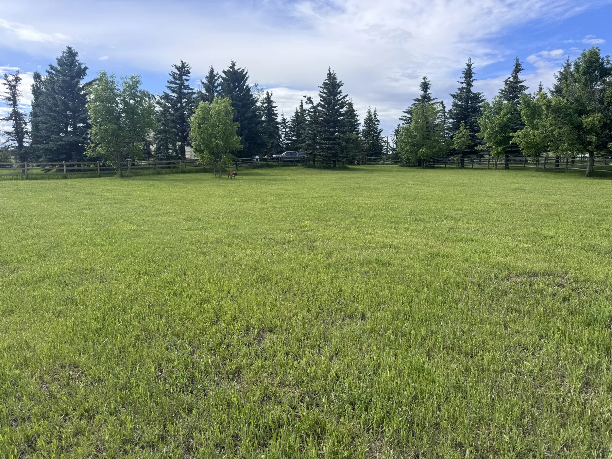

Welcome to Paradigm Boxers
Our Kennel:

For over 18 years, we have been devoted to the Boxer breed, studying pedigrees, working with different enthusiasts, and carefully selecting dogs that reflect the old-world European standard. Paradigm Boxers began with a single imported dog and a vision of combining heritage with modern health testing. Today, our program is built on imported and European-line Boxers chosen for their structure, working ability, and stable, family-friendly temperaments.
Each generation is planned with intention, never convenience.
From our kitchen table to yours...
The Grounds
Our home and kennel sit in the Foothills of Alberta, surrounded by open space and fresh air. Puppies are raised indoors with exposure to household life, then gradually introduced to safe outdoor areas, different surfaces, and age-appropriate challenges that build confidence.


Development Areas
early socialization
Beginning in our integrated nursery, pups are introduced to everyday household noises, gentle handling, and diverse textures to build a resilient foundation for their future homes.
environmental focus
As our puppies grow, they transition into secure housing and play areas designed to encourage exploration and development. A variety of surfaces, textures, crates, and age-appropriate challenges are gradually introduced. Puppies are also exposed to natural terrain and structured obstacles that help develop coordination, body awareness, confidence, and overall structural balance.
Our Home and Nursery
Nursery Area
At Paradigm Boxers, our nursery is intentionally integrated into the heart of our home. Located directly within Crystal’s office and positioned beside the primary bedroom, this space is designed to give newborn litters the highest level of care, supervision, and stability from their very first moments. This dedicated nursery-office setup allows for immediate access to pups around the clock, ensuring that temperature regulation, nursing, and maternal behavior are monitored continuously during the critical neonatal period.

Our Home and Kindergarden Area
Kindergarten Area
Our Kindergarten area represents the next step in our socialization program. As puppies mature, they transition from the nursery into this intentionally designed environment that emphasizes exploration and core basic skills. Here, we introduce age-appropriate challenges, diverse surfaces, and structured play that build confidence and coordination, preparing every Paradigm Boxer for a successful transition into their future permanent homes.

Outdoor Area
Our Puppies' Outside Play Area is where the real adventure begins. In this secure outdoor environment, puppies are introduced to the sights and sounds of the world under careful supervision. The space features grassllike terrain and specialized enrichment equipment designed to stimulate their senses, develop their physical skills, and foster a healthy curiosity that will serve them throughout their lives.


Our front fields are offered to the local community as fully fenced, off‑leash areas, providing a secure and peaceful environment where dogs can truly relax. These private fields give owners confidence and ease of mind, while offering reactive or sensitive dogs the rare opportunity to decompress, explore, and move freely without the stressors of busy public parks. Several local rescues also rely on these spaces for safe decompression, controlled introductions, and confidence‑building sessions, giving dogs in transition a calm place to reset. By maintaining clean, well‑managed, fully enclosed fields, we support safer socialization, focused training, and quiet enjoyment for every dog and handler who visits—reflecting our commitment to responsible canine stewardship and to strengthening the bond between dogs, their families, and the wider Foothills community. Visit SNIFFSPOT Vista Acres Okotoks for more information and 1000's of independent, unsolicited reviews of our grounds.


Want to Learn More About Our Program?
We welcome thoughtful questions about our dogs, our breeding decisions, and our placement process.
Inquire About Paradigm Boxers